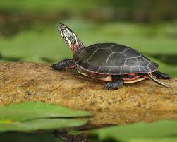
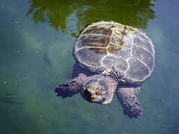
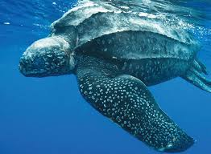
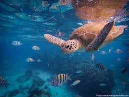
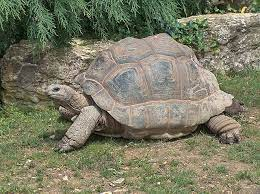
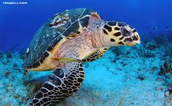
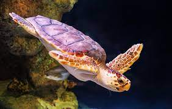
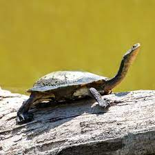
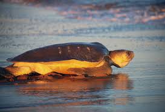
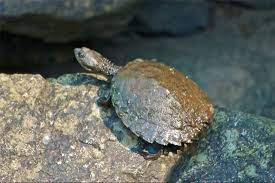

Turtle-o-pedia
Painted Turtle
Scientific Name: Chrysemys picta
Habitat: North American fresh-water bodies

Common Snapping Turtle
Scientific Name: Chelydra serpentina
Habitat: North American fresh-water bodies

Leatherback Sea Turtle
Scientific Name: Chelydra serpentina
Habitat: Pacific and Atlantic oceans

Green Sea Turtle
Scientific Name: Chelonia mydas
Habitat: Pacific ocean

Giant Tortoise
Scientific Name: Chelonoidis niger
Habitat: Galapagos islands

Hawksbill Sea Turtle
Scientific Name: Eretmochelys imbricata
Habitat: Tropical oceans and coral reefs

Loggerhead Sea Turtle
Scientific Name: Caretta caretta
Habitat: Mesoamerican Reef, Coastal East Africa, Gulf of California, Coral Triangle

Eastern Long-necked Turtle
Scientific Name: Chelodina longicollis
Habitat: Australian water bodies

Flatback Sea Turtle
Scientific Name: Natator depressus
Habitat: Australian coastal water

Sawshelled Turtle
Scientific Name: Myuchelys latisternum
Habitat: Australian rivers
